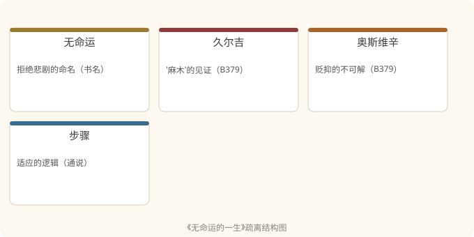

无命运的一生
一、基本信息
| 作者 | 凯尔泰斯·伊姆雷 |
|---|---|
| 成书/出版 | 1975年（Britannica B379：Sorstalanság (1975)——60年代中期完成） Imre Kertesz — Encyclopaedia Britannica（百科全书） |
| 国别/地区 | 匈牙利 |
| 时代 | 近代 · 20世纪70年代 |
| 体裁 | 长篇小说 |
| 语言 | 匈牙利语 |

《无命运的一生》疏离结构图（主题·结构图）
二、创作背景
Britannica（B379）：叙述者'confronts the inexplicable horror of human degradation not with outrage or resistance but with seemingly incomprehensible complacency and detachment'。
Britannica（B379）：1990年德译本后更受关注——译成10余种语言——2005年自改编电影。
Britannica（B379）：凯尔泰斯——14岁被逐奥斯维辛、布痕瓦尔德——1945年5月获释。
三、内容脉络
（通说待核）科维什·久尔吉的奥斯维辛-布痕瓦尔德：'步骤'式的适应。
（通说待核）'无命运'：没有选择的选择。
四、主要人物表
| 人物 | 身份 | 说明 |
|---|---|---|
| 科维什·久尔吉 | 15岁被逐者 | （通说待核，B379未载） |
五、主题与艺术特点
- '麻木与超然'（B379：complacency and detachment）。
- '无命运'：拒绝悲剧的姿态（书名语境——通说待核）。
- 人的贬抑的'不可理解'（B379：inexplicable horror）。
六、影响与评论
- Britannica：2002诺奖（B379）。
Imre Kertesz — Encyclopaedia Britannica（百科全书） - Britannica：'translated into more than 10 languages'（B379）。
Imre Kertesz — Encyclopaedia Britannica（百科全书）
七、阅读建议
难点
- '疏离'叙述的伦理。
- 奥斯维辛-布痕瓦尔德史。
- 《无命运的一生》中译本（人民文学等——通说待核）。
- 匈牙利文原版。
凯尔泰斯首选；后接《给未出生孩子的挽歌》。
八、待核实
- 科维什·久尔吉人名核对（通说）。
- 1975年出版（Szépirodalmi说）待核。
- '下一步'（Légszomj）等细节待核。
本页主要来源
凯尔泰斯·伊姆雷的其他收录作品：无命运的一生